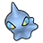
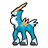
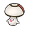
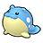
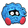
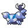

Pokémon
- Wild Swellow have a 5% chance of holding a Charti Berry.
- Wild Lunatone have a 5% chance of holding a Moon Stone and a 1% chance of holding a Comet Shard (in dark grass only).
- Wild Solrock have a 5% chance of holding a Sun Stone and a 1% chance of holding a Comet Shard (in dark grass only).
- Wild Audino have a 50% chance of holding an Oran Berry and a 5% chance of holding a Sitrus Berry.
- Wild Emolga always hold a Cheri Berry.
- Wild Shuppet have a 5% chance of holding a Spell Tag.
- Wild Staryu and Starmie have a 50% chance of holding Stardust and a 5% chance of holding a Star Piece.
- Wild Corsola have a 5% chance of holding a Hard Stone.
- Wild Shellder and Cloyster have a 50% chance of holding a Pearl and a 5% chance of holding a Big Pearl.
- Wild Luvdisc have a 50% chance of holding a Heart Scale.
Walking
Walking (dark grass)
Walking (rustling grass)
Swarm
During a swarm, the player has a 40% chance of encountering the swarming Pokémon, and a 60% chance that their encounter is taken from the normal encounter table.
| Pokémon | Level | |
|---|---|---|
|
 |
Shuppet | lv. 15-55 |
Surfing
Surfing (rippling water)
Fishing
Fishing (rippling water)
Pokémon
- Wild Drifblim have a 1% chance of holding an Air Balloon (in dark grass only).
- Wild Lunatone have a 5% chance of holding a Moon Stone and a 1% chance of holding a Comet Shard (in dark grass only).
- Wild Solrock have a 5% chance of holding a Sun Stone and a 1% chance of holding a Comet Shard (in dark grass only).
- Wild Audino have a 50% chance of holding an Oran Berry and a 5% chance of holding a Sitrus Berry.
- Wild Emolga always hold a Cheri Berry.
- Wild Swellow have a 5% chance of holding a Charti Berry.
- Wild Foongus have a 50% chance of holding a TinyMushroom and a 5% chance of holding a Big Mushroom.
- Wild Skorupi have a 5% chance of holding a Poison Barb.
- Wild Staryu and Starmie have a 50% chance of holding Stardust and a 5% chance of holding a Star Piece.
- Wild Luvdisc have a 50% chance of holding a Heart Scale.
- Wild Shellder and Cloyster have a 50% chance of holding a Pearl and a 5% chance of holding a Big Pearl.
Walking
Walking (dark grass)
Walking (rustling grass)
Swarm
During a swarm, the player has a 40% chance of encountering the swarming Pokémon, and a 60% chance that their encounter is taken from the normal encounter table.
| Pokémon | Level | |
|---|---|---|
| Swellow | lv. 40-55 | |
Static
| Pokémon | Level | Notes | |
|---|---|---|---|
|
 |
Cobalion | 45 | If defeated or run from, it reappears at level 65 after defeating the Elite Four. |
Hidden Grotto (near Giant Chasm)
When a Hidden Grotto's contents regenerate, there is a 20% chance that it will contain a Pokémon. The following Pokémon may be encountered. All of them have their Hidden Ability.
| Pokémon | Rate | Levels | |
|---|---|---|---|
|
 |
Foongus | 15% | lv. 35-40 |
 |
Drifloon | 4% | lv. 35-40 |
|
 |
Spheal | 1% | lv. 35-40 |
Hidden Grotto (near Lacunosa Town)
When a Hidden Grotto's contents regenerate, there is a 20% chance that it will contain a Pokémon. The following Pokémon may be encountered. All of them have their Hidden Ability.
| Pokémon | Rate | Levels | |
|---|---|---|---|
| Foongus | 15% | lv. 35-40 | |
|
 |
Tangela | 4% | lv. 35-40 |
|
 |
Skorupi | 1% | lv. 35-40 |